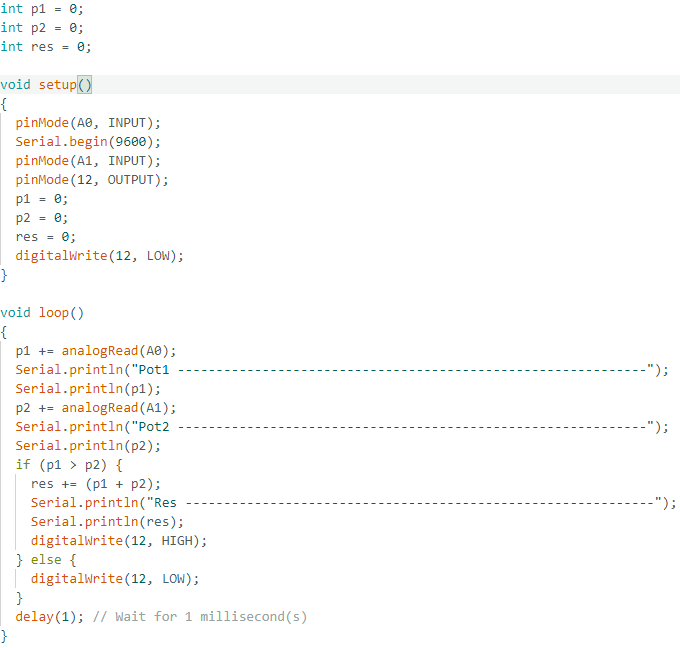
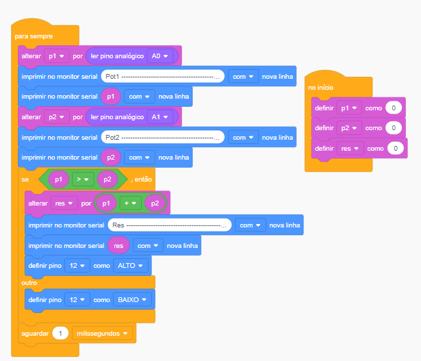

O que é a Linguagem de Programação C++ para ARDUINO
A linguagem de programação C++ é amplamente utilizada no desenvolvimento
de projetos na plataforma Arduino. O Arduino usa uma versão simplificada
do C++ para facilitar o processo de programação. Essa linguagem oferece
poderosas funcionalidades de controle de hardware, permitindo que os
desenvolvedores escrevam códigos para controlar sensores, motores, LEDs
e outros componentes eletrônicos com precisão.
No contexto do Arduino, o C++ é utilizado no Arduino IDE, um ambiente de
desenvolvimento integrado que simplifica a criação, compilação e envio
de código diretamente para o microcontrolador da placa. A linguagem
permite o uso de bibliotecas prontas que facilitam a interação com
dispositivos e sensores, além de possibilitar a criação de códigos
altamente eficientes, com controle de tempo real.
- Sintaxe simplificada para iniciantes.
- Suporte a funções de hardware específicas do Arduino.
- Manipulação direta de portas de entrada/saída digitais e analógicas.
- Controle eficiente de temporizadores e interrupções.
- Capacidade de leitura de sensores e controle de atuadores como motores.
O uso de C++ no Arduino é ideal para projetos de automação, prototipagem
e robótica, onde o controle preciso do hardware é essencial.
Exemplo de código C++ no IDE ARDUÍNO
Exemplo de código de Blocos no Tinkercad
